A Boolean function may be expressed two ways:
<variable>
<function-identifier> ( arg1 arg2 ... )
where <function-identifier> is one of the following predefined
function identifiers, and arg# is either a variable, a Boolean
function or a reference to a Boolean function. The token <variable>
is a character string and its use in an input file creates a simple Boolean
function which is identified by that name, the value of which is the value
of the variable named <variable>. Every Boolean function is
implemented as a BDD (see Section 10.1) and may have value T, or F, or have no value, depending on its arguments: values of
Boolean functions are given as follows for each <function-identifier>.
Remark: Most functions take an arbitrary number of arguments, hence, parenthesis are necessary. Commas are considered whitespace and are ignored, however, their use is recommended to enhance the human readability of input files.
VAR
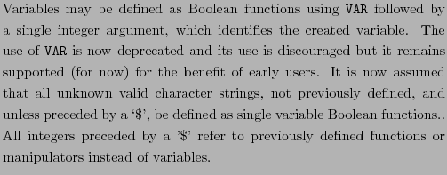
NOT
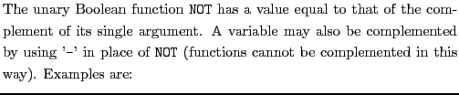
not(x32)
-x32
ITE
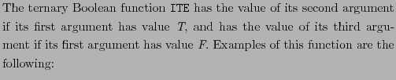
ite(ite( x3, $5, -x5), x4, x7)
AND
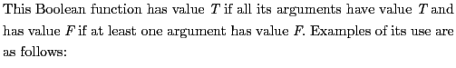
and(x1, x2, x3, x4)
and(-x1,
and(x2, x3, $4),
x5, $6, x7)
NAND
OR
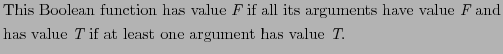
NOR
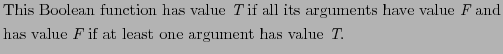
XOR
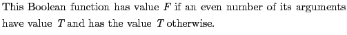
EQU
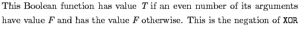
SAME
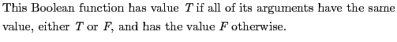
IMP
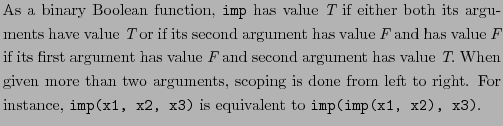
NIMP
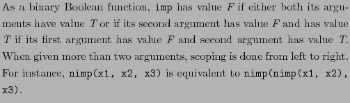